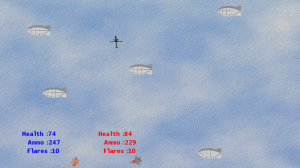

So in my last post I explained a challenge set down by my good friend @TheCacktus to write a game in 4 weeks. If you want to checkout the rules to this challenge read the previous post which has them all there. Over the last 2 weeks I have been desperately finding the spare time to design and write a game.

The first week was the Design week. So I didn’t do any coding or start graphics or sound or anything, just design the game. Given its my first go at this (I’ve historically worked on game engines/api’s) I figured I’d start off slowly. Two weeks ago I was planning to sit myself down in a coffee shop and figure out what kind of game to write, action, rpg, platformer.. But life took and unexpected turn and I ended up going round a mates house for a curry.. First day lost.
I was a bit more successful the following week, a few evenings after work I managed to nail down the idea. Basically a 2-4 player top down shooter using aircraft. The player is able to pick from 3 different aircraft, the legendary BAe Harrier or AV8 for the American’s out there.. and yes sorry to say that that wonderful jet the US Marine corps uses is British designed. The F35B the Harriers future replacement, and the AH-64 Apache Gunship. I picked these aircraft for a number of reasons, principally they all have some ability to fly backwards. Obviously the Apache is will be as fast as the two jets going forward, but it can go just as fast backwards as it can forwards and I thought this might be interesting to try out.
As will all game designs things may or may not work out. For weapons I decided that all aircraft will have a cannon with 300 rounds in it. That is the default weapon, the game will drop an ammo picked every few minutes so people can top up. There is also a 4 round Air - Air missile pickup which might drop. This gives the player 4 missiles which do more damage than a cannon bullet. But the only ‘lock on’ to a target you a facing so its’ no go firing it in the other direction.
Each aircraft has a set of 10 flare packs as well, these can be used to avoid the missiles but the plan is it will take some skill and might not always work. The game win condition for the game is last man standing, while I didn’t think of it at the time and it’s not in the game I can use stat’s like number of rounds fired , number of hits, number of collisions etc to issue awards at the end of each match. This idea occurred to me during the coding week, but as I was following the rules I can’t add it till after the test/review phase.

I think I spent about 6-8 hours in that first week working on the design and figuring out what I wanted to do. In hindsight that could have probably spent a bit more time on it.
Now for the coding, this was really hard. I had a busy week at work/family so I only had the evenings and the weekend to code up the game. I think the total hours I spent on this was in the region of 24-28 hours, which isn’t bad it averages out at about 4 hours each evening.
I made a couple of important decisions before starting to code, I had a few suggestions before I started to use engines like Unity, Marmalade or Moai for the game but in the end I decided to stick with XNA. The great thing about XNA is it has a whole bunch of Samples you can use to base your games on. I started of by downloading the GameStateManagement sample, this sample provides you will a framework for transitioning between and Menu screen to Options and Gameplay etc. You could waste hours writing that stuff yourself, you are better off using existing code. There was a temptation to base the code on the excellent NetRumble sample to start with, but I decided against that because it was a full game already and I wanted to write the code ‘game’ myself.
That said I did borrow the CollisionManager and Weapon system from NetRumble, it was fairly extendable and the Weapon system made implementing my own weapons easy. One of the hard parts was implementing the IR Missiles, getting it to turn towards a aircraft was fairly straight forward, implementing a limited line of sight was a bit more problematic to get right. I’m still not entirely happy with the results as the missile tends to turn before its even left the aircraft rather than waiting a while before it starts to lock-on. But then again I didn’t put that in the spec so I didn’t change it.

I had some weird bugs during testing which boiled down to me not clearing the CollisionManager between games, so I ended up with ghost objects in the game that players would collide with. Other than that it went pretty smoothly, I think the key was to keep the concept simple to start with. Reusing existing code and samples helped allot, I don’t think I would have done it in the time otherwise.
For graphics, being somewhat artistically challenged I decided to make the most of the tools I had available. I used a Windows Store app called Fresh Paint. This is a cool artistic app that is great on a Surface RT/Pro, the Pro much more so because you can use the Pen. It has a cool feature of being able to take images and do a water color version of them. So I simply did that on all the graphics I had, it might look like I painted all the menu screens but I didn’t ;). I think it turned out very well considering I spent about 2-3 hours of the total coding time on graphics.
The sounds effects we courtesy of my voice and Audacity, its amazing what you can do with your own voice, I’m surprised more game developers don’t do it if I’m honest.
So the next week is the testing/review phase. I’ve sent the game out to a few friends to test and feedback, hopefully they will have time to play it otherwise I’ll have to ditch it all and start again. After this week we have one more week of polish and implanting the feedback before I have to release the app, not entirely sure where to release it yet though. I might try porting it to OUYA in that last week and see how that works.
Anyway for those of you wanting to test it out you can get the zip file of the release http://www.infinitespace-studios.co.uk/wp-content/uploads/2014/01/InfiniteSpace.Dogfight.zip.
Happy coding.